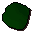
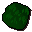
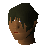
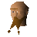
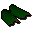
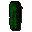

Dragon leather

| Config name | dragon_leather |
| Item id | 1745 |
| Weight | 7lb |
| Members | Yes |
| Tradeable | Yes |
| Stackable | No |
| Defined in | scripts/skill_crafting/configs/leather/hides.obj |
Dragon leather
It's a piece of prepared dragonhide.
Made by Leatherworker from

Dragonhide for 20 gp.Made by

Tanner from Dragonhide for 20 gp.Made by

Sbott from Dragonhide for 45 gp.Used to make
| Skill | Level | XP | Ingredients | Tool | How | Where | Makes |
|---|---|---|---|---|---|---|---|
| Crafting | 57 | 62.0 | Dragon leather, | chat menu Dragonhide Body. / Dragonhide Vambraces. / Dragonhide Chaps. |  Dragon vambracesmembers | ||
| Crafting | 60 | 124.0 | Dragon leather ×2, | chat menu Dragonhide Body. / Dragonhide Vambraces. / Dragonhide Chaps. |  Dragonhide chapsmembers | ||
| Crafting | 63 | 186.0 | Dragon leather ×3, | chat menu Dragonhide Body. / Dragonhide Vambraces. / Dragonhide Chaps. | members |
Referenced in scripts
scripts/areas/area_alkharid/scripts/tanner.rs2scripts/skill_crafting/scripts/leather/leather.rs2